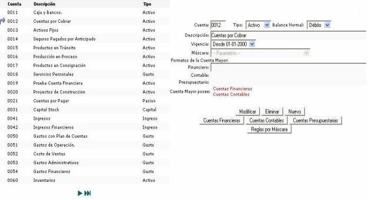

Permite el ingreso de los códigos de cuentas mayores, ingrese la descripción de la cuenta un período de vigencia (mes, año) así como una máscara para la misma.
Figura 1. Catálogo de Cuenta Mayor.
Para agregar cuentas contables a cuentas padres, es necesario llevar a cabo los siguientes pasos:
1. Seleccione la cuenta padre de la lista situada al lado izquierdo de la pantalla.
2. Luego seleccione el tipo y el balance normal.
3. Ingrese una descripción y seleccione un período de vigencia.
4. Finalmente haga click sobre el botón "Modificar".

Figura 2. Catálogo de Cuenta Mayor (hijas).